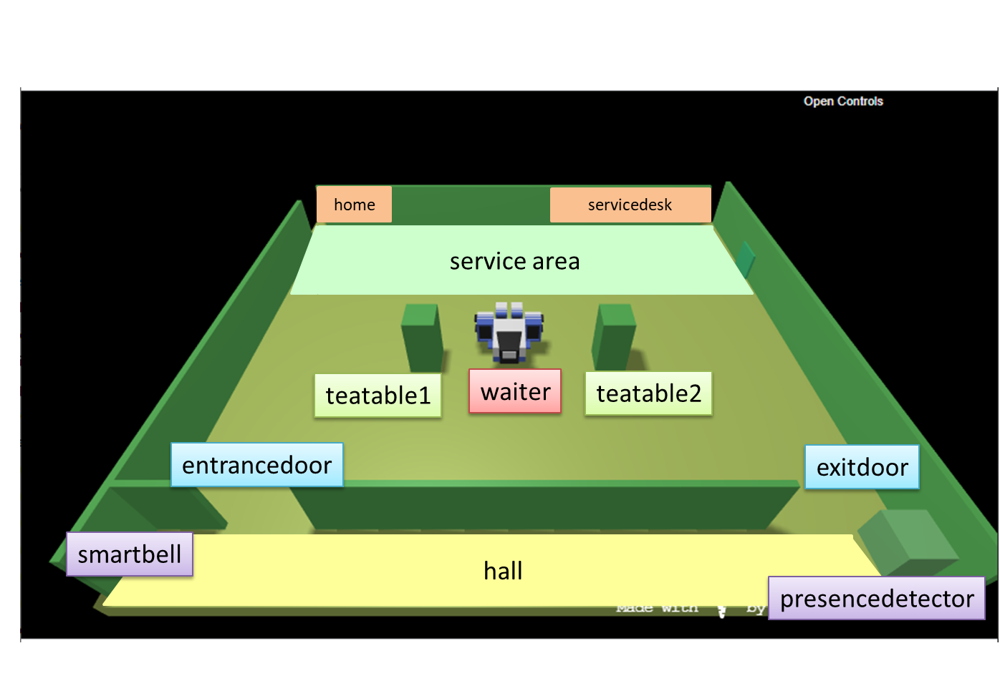

Final task ISS-2021 Bologna: Automated Parking
Automated Parking
A company intends to build an
automating parking service by exploiting:
- A software system named ParkManagerService that implements the required automation functions.
- A DDR robot working as a transport trolley that is intially situated in its home location.
- A parking-area that includes;
- an INDOOR to enter the car in the parking-area and an OUTDOOR to exit form it;
- a number N (N=6) of parking-slots;
A map of the parking area, including the positions of the fixed obstacles and of the parking-slots is available in the file
parkingMap.txt.

- a parking-manager (an human being) that should monitor the state of the parking-area
User stories
As a
client:
- I intend to use the ParkServiceGUI provided by the ParkManagerService to notify my interest in entering
my auto (with licence plate NUMTARGA)
in the parking-area and to receive as answer the number SLOTNUM of a free parking-slot (1<=SLOTNUM<=6).
SLOTNUM==0 means that no free slot is available.
- If SLOTNUM >0, I move my car in the INDOOR, get out of the car and afterwards press a CARENTER button on the
ParkServiceGUI. Afterwards, the transport trolley takes over my car and moves it from the INDOOR
to the parking-slot of the given SLOTNUM.
I'll receive a (unique) TOKENID
- Later, I intend to use the ParkServiceGUI to go back for the car, by submitting a proper request with the TOKENID previously received.
Afterwards, the transport trolley takes over my car and moves it from its parking-slot to the OUTDOOR.
As a
parking-manager:
- I intend to be able to see the current state of the parking by using a 'private' ParkServiceStatusGUI.
Requirements
The
ParkManagerService should perform the following tasks:
acceptIN: accept the request of a client to park the car if there is at least one parking-slot available.
If SLOTNUM>0:
- informIN: inform the client about the value of the SLOTNUM and of the related TOKENID ;
- moveToIn: move the transport trolley from its current localtion to the INDOOR ;
- moveToSlotIn: move the transport trolley from the INDOOR to the SLOTNUM/parking-slot;
- moveToHome: if no other request is present, move the transport trolley to its home location
else acceptIN or acceptOUT
- moveToHome: if no other request is present move the transport trolley to its home location;
else acceptIN or acceptOUT
acceptOUT: accept the request of a client to get out the car with TOKENID:
- findSlot: deduce the number of the parking slot (CARSLOTNUM) from the TOKENID;
- moveToSlotOut: move the transport trolley from its current localtion to the CARSLOTNUM/parking-slot ;
- moveToOut: move the transport trolley to the OUTDOOR ;
- moveToHome: if no other request is present move the transport trolley to its home location;
else acceptIN or acceptOUT
Using a real robot
No further requirement.
Using the virtual robot only
- authorizeddManager: allow a manager to use the ParkServiceGUI only if she/he owns proper permissions.
Non functional requirements
- The ideal work team is composed of 3 persons. Teams of 1 or 2 persons (NOT 4 or more) are also allowed.
- The team must present a workplan as the result of the requirement/problem analysis,
including some significant TestPlan.
- The team must present the sequence of SPRINT performed, with appropriate motivations.
- Each SPRINT must be associated with its own 'chronicle' (see templateToFill.html)
that presents, in concise way, the key-points related to each phases of development.
Hopefully, the team could also deploy the system using docker.
- Each team must publish and maintain a GIT-repository (referred in the templateToFill.html)
with the code and the related documents.
- The team must present (in synthetic, schematic way) the specific activity of each team-component.
Guidance
- Il numero e le finalità degli SPRINT sono definiti dal Team di sviluppo dopo opportune interazioni con il committente.
- Il committente (e/o il product-owner) è disponibile ONLINE in linea di massima ogni Giovedi dalle 15 alle 18 fino a fine Luglio, ma è sempre contattabile on-demand via email.
- Lo svolgimento del lavoro è auspicabile avvenga in diverse fasi:
- Fase di analisi, che termina con la definizione di una architettura logica del sistema, di modelli eseguibili e alcuni, significativi piani di testing.
- Fase di progetto e realizzazione, che termina con il deployment del prodotto.
- Fase di discussione del lavoro svolto, che potrebbe (auspicabilmente) svolgersi IN PRESENZA in LAb2.